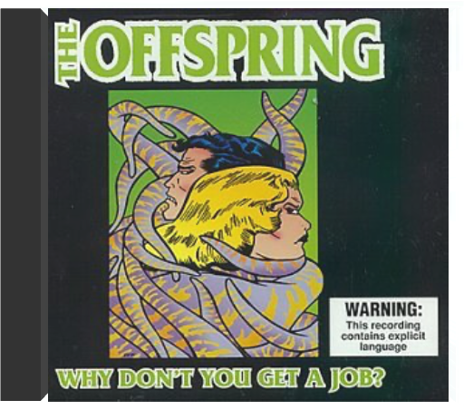

Fourth album for Australian folk band, their first since 1996's 'Good Luck'. Well worth the wait, 'Curious' is another mix of eclectic songs & instrumentals, centering, as per usual, around the piano & strings. 14 tracks plus a 12 page booklet with cool photos, lyrics & credits. EMI. 2002. |  Why Don't You Get a JobOffspring The second single from the Southern California punk rockers'1998 album 'Americana'. Contains 'Why Don't You Get A Job?' (Album Version), 'Pretty Fly (For A White Guy)' (LowridersRemix), 'Beheaded' and the CD-ROM video to 'Pretty Fly (ForA White Guy)'. Sli  1997 release 'Brighten The Corners' is a record that reveals its gifts gradually, giving you enough information the first time to make you want come back for more. Matador Records.  Produced by Rick Rubin! Huge 2002 LP includes "By The Way" & "Zephyr Song".  The first single from the alternative rock act's 1999 album 'Californication'. It's backed with two previously unreleased non-album tracks, 'Gong Li' & Instrumental #1'. Slimline jewelcase. 1999 release. |

Doddridge Library
Collection Total:
417 Items
417 Items
Last Updated:
Apr 21, 2020
Apr 21, 2020


 Made with Delicious Library
Made with Delicious Library